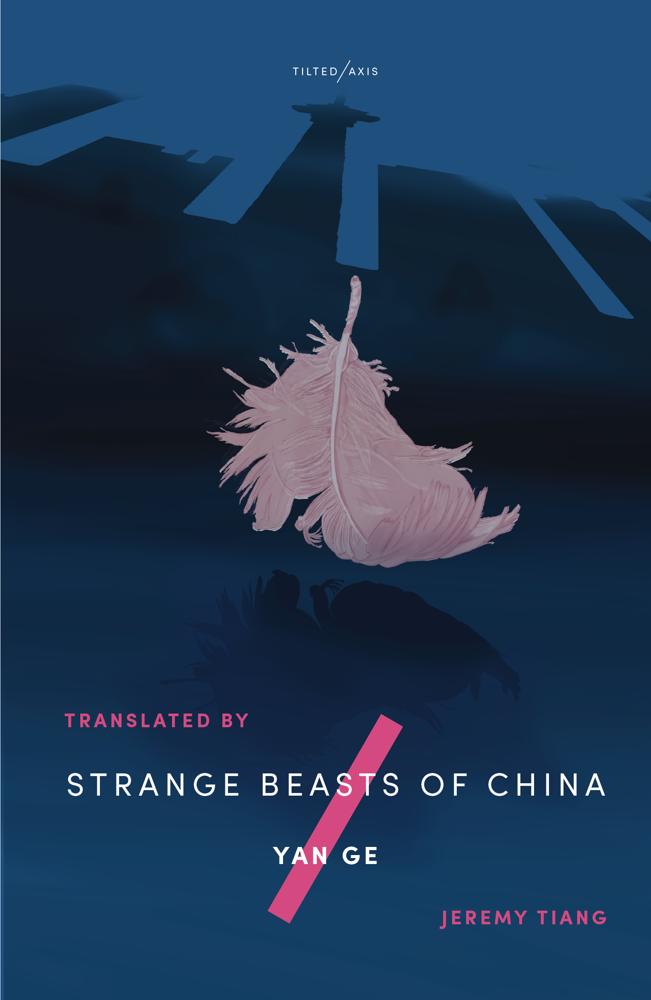

LCSFG Author Event with Yan Ge
In partnership with Tilted Axis Press, we discuss her novel "Strange Beasts of China" (translated by Jeremy Tiang)
16th December 2020

Join the London Chinese Science Fiction Group for a special author event with Yan Ge, whose new book Strange Beasts of China is now translated by Jeremy Tiang and published by Tilted Axis Press.
We will host an online webinar event with Yan Ge to discuss the feminisms, speculative and mythical fictions and the inspirations behind her compelling book. As usual in our regular LCSFG monthly sessions, there will also be an opportunity for the audience to open up the discussion further at the end.
Please register for a free ticket via this Eventbrite page. We will send the video call link to your email inbox.
A whimsical and unsettling novel by one of China's most acclaimed young writers, told in the form of a bestiary.
In the fictional Chinese town of Yong’an, human beings live alongside spirits and monsters, some of which are almost indistinguishable from people. The narrator, an amateur cryptozoologist, is on a mission to track down each breed in turn, but in the process discovers that she might not be as human as she thought. As her research leads her inexorably to the City of the Dead and its secrets, she begins to question how certain she can be that anyone around her is truly human, or if ‘human’ and ‘monster’ are really such different categories.
Yan Ge was born in Sichuan, China in 1984. She is a fiction writer in both Chinese and English. Yan’s first short story collection was published in China when she was seventeen. She is the author of thirteen books, including six novels. She has received numerous awards, including the prestigious Maodun Literature Prize (Best Young Writer). She was named by People’s Literature magazine as one of twenty future literature masters in China. Her work has been translated into English, French and German, among other languages. Her novels translated into English include The Chilli Bean Paste Clan (Balestier Press 2018, translated by Nicky Harman) and Strange Beasts of China (Tilted Axis Press 2020, translated by Jeremy Tiang). She lives in Norwich, UK.
Jeremy Tiang is a Singaporean writer, translator, and playwright, based in New York City. He has translated more than ten books from Chinese, including novels by Zhang Yueran, Yeng Pway Ngon and Chan Ho-Kei, and is the recipient of a PEN/Heim Grant, an NEA Literary Translation Fellowship, and a People's Literature Prize Mao-Tai Cup for Translation. He has also translated plays by Wei Yu-Chia, Zhan Jie and Xu Nuo. He is the author of a short story collection (It Never Rains on National Day, shortlisted for the Singapore Literature Prize 2015) and a novel (State of Emergency, Epigram Books, 2017).
Below: Illustration of Yan Ge by Soraya Gilanni Viljoen.
London Chinese Science Fiction Group has partnered with Tilted Axis Press to bring you a special author event with Yan Ge (see below in case you missed it).
With this, the publisher is offering a generous 20% off any Tilted Axis Press title(s) until the 27th December 2020.
Please use the code LONDONCHINESESFGROUP. Shop here!
Ahead of our event next Wednesday, Tilted Axis Press will provide a free e-book with every purchase of Yan Ge's Strange Beasts of China, translated by Jeremy Tiang. Please email tice[at]tiltedaxispress.com with your proof of purchase from the Tilted Axis Press webshop, and you can enjoy the digital copy whilst your book is on its way.
Update: you can now read about our event
here.